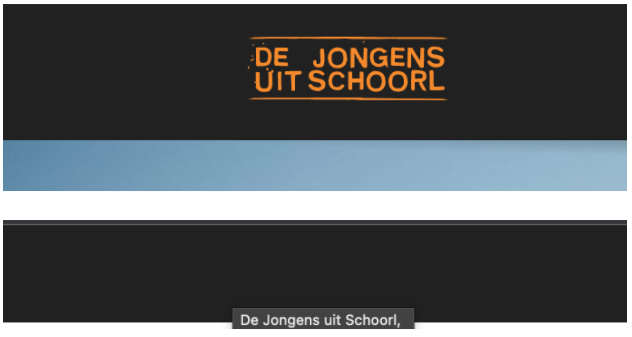

Browser Technologies: Opdracht 2
Wat is de opdracht?
Onderzoek minimaal twee features. Dat betekent uitvogelen wat het voor impact heeft op de sites die je kent en normaal gebruikt. Zoek uit hoe je de feature kan testen. Kies sites in je directe omgeving: van je werkgever, lokale vereniging, de cafetaria om de hoek, en/of eerdere projecten die je zelf gedaan hebt. Onderzoek de problemen, cijfers en/of meningen. Bedenk ook hoe je de problemen zou kunnen oplossen.
Opties:
- Afbeeldingen uitzetten / Gwen
- Custom fonts uitzetten / Sophie
- Kleur uitzetten & kleurenblindheid instellen / Gwen, Sophie
- Muis/Trackpad werkt niet / Sietse
- Breedband internet uitzetten / Sietse, Tim
- Javascript (volledig) / Tim, Fabian
- Cookies niet accepteren / Tom, Fabian
- localStorage doet het niet / Tom
Afbeeldingen uitzetten
Chrome
- In the upper right, open the Customize and control Google Chrome menu by clicking the three horizontal bars. Select Settings.
- Click the Show advanced settings... link, and then, under "Privacy", click Content settings....
- Under the "Images" heading, select Do not show any images.
- Click OK, and then close the Settings tab. If necessary, reopen Chrome to continue browsing.
Het logo
Het logo wordt ook gebruikt als linkje terug naar de homepagina, omdat je de afbeeldingen uitzet wordt ook het logo verwijderd. Hierdoor kun je nog wel terug naar de Homepagina, maar het wordt een stuk lastiger. Het linkje staat er nog, dus als je weet waar het logo normaal staat kun je erop klikken en ga je terug, maar als je het niet weet, zal je het nooit vinden.
Deze logo’s zijn ook als plaatje ingeladen. Hierdoor zijn ze dus niet te zien wanneer je de afbeeldingen uitzet, maar de tekst blijft staan en wordt oranje wanneer je erover hovert. Hierdoor is het alsnog duidelijk dat je er op klikt en waar je heen gaat.
Contact balkje
Dit balkje verschijnt aan de rechterkant van je beeld. Dit is om contact te zoeken, maar het contact logo en de tekst is een afbeelding en verdwijnt dus wanneer je afbeeldingen uitzet. Het is dus niet meer duidelijk waarvoor dit balkje is.
Oplossingen
- Tekst erbij die ook als link dienen
- Belangrijke knoppen/logo’s maken in CSS
- Vervangend vak waar normaal de afbeelding hoort te staan
Bronnen:
https://kb.iu.edu/d/acpv, https://djus.nl/
Custom fonts uitzetten

Bronnen:
Kleur uitzetten & kleurenblindheid instellen
kleuren uitzetten
- Ga op je laptop naar system preference
- Klik op accessibility en ga dan naar display
- Klik op “Enable colour Filters
Hover
Wanneer je op de site hovert over de puntjes worden ze blauw. Zonder kleuren zie je eigenlijk geen verschil tussen de hover of geen hover. Hierdoor kan er verwarring ontstaan of je erop kunt klikken of niet. Gelukkig veranderd wel je muis naar een pointer waardoor het duidelijker is dat je kunt klikken
Dit is een oplossing om een hover duidelijk te maken. Naast een kleurverandering wordt er ook een streep onder de text geplaatst. Hierdoor is de actie ook zonder kleur duidelijk. Verder zijn afbeeldingen iets saaier zonder kleur, maar ze blijven wel duidelijk. Wanneer je groot contrast gebruikt met kleuren wanneer je bijvoorbeeld hovert, zal dit zonder kleur ook een duidelijke verandering geven. Of zoals het voorbeeld hierboven. Een streep of iets laten verschijnen zodra je hovert.
Bronnen:
https://dlo.mijnhva.nl/d2l/home, https://www.clintoneye.com, https://www.colourblindawareness.org
Muis/Trackpad werkt niet
Navigating a website with the keyboard primarily requires only a few keys, but they’re used constantly. The following keys are most fundamental to using a website.
- TAB
- SHIFT+TAB
- SPACE
- ENTER
- The left, right, up, and down arrow keys.
You can also move the mouse with your keyboard.
Lastly laptops these days might have touchscreen. You have to enable it in your devices if you work with a windows laptop.
As a web developer you need to make sure your page is clear when tabbing through it by using focus states in your css.
There are also extensions you can download where you can type a hint and the extension will navigate to that part of the page.
There is also a browser that runs 100% in your terminal called lynx. And ofcourse if it runs in the terminal you don't need a mouse to navigate it. You use certain commands shown at the bottom of the terminal
Bronnen:
https://www.practicalecommerce.com/Using-Keyboard-only-Navigation-for-Web-Accessibility
Breedband internet uitzetten
Het langzaam in laden van websites komt vaak door slecht internet, op mobiel dat je bijvoorbeeld 3g gebruikt of met je laptop slechte connectie heb.
Je kan testen hoe je website in laad met langzaam internet door naar inspect element te gaan op de chrome browser en te navigeren naar “netwerkomstandigheden”. Hier kan je een netwerkbeperking aanzetten. Hier heb je keuze tussen: Geen throttling, snelle 3g, langzame 3g, offline en aangepast. Bij aangepast kan je zelf snelheden invullen.
Om je website sneller te laten laden kan je het beste eerst alle html/css in laten laden tot je de javascript in laad. Als je templating gebruikt is het ook een idee om eerst een statische html pagina in te laden en hier later een template over te renderen, zo zie je toch iets als de pagina laad.

dlo laad niet al te best in, je ziet voor een paar seconden niets, daarna zie je een skelet van items die ingeladen gaan worden.
Youtube heeft een lange loading state
Je kan ook met inspect element lighthouse bekijken hoe snel een site is.
Bronnen:
https://www.eurovps.com/blog/reasons-for-slow-website-loading, https://dlo.mijnhva.nl/d2l/home
Javascript (volledig)
Je kan de javascript uitzetten met een developer tool. Als je dan de pagina refreshed is alle javascript uitgezet. Ik heb dit getest bij futbin.com. Als de javascript uitgeschakeld is worden de foto’s van de fifa kaarten niet geladen. Ook worden de live market prijzen niet meer geladen en.
Ik ben nog aardig verbaasd over hoeveel er nog wel bruikbaar is van de website. De enige echte core functionaliteit, het checken van de prijzen is niet bruikbaar. Een oplossing zou kunnen zijn dat misschien elke dag een gemiddelde prijs neergezet worden die zonder javascript worden berekend (geen idee hoe). Als je instagram probeert op te starten zonder javascript kom je niet ver:
Met dlo is het hetzelfde als bij instagram, niets laad. Dit is echt heel slecht gedaan omdat je dus niet kunt kijken naar informatie.
Bronnen:
https://developer.chrome.com/docs/devtools/javascript/disable/, https://www.enable-javascript.com/
Cookies niet accepteren
In de instellingen van de chrome browser kan je instellen dat je alle cookies kan blokkeren Cookies onthouden je persoonlijke informatie en internet browsing preferences
Dit zijn de gewone cookies maar er bestaan ook third party cookies beter bekend als tracking cookies: bedrijven en websites kunnen informatie over uw locatie, baan, financiën, winkel gewoonte en meer verzamelen en analyseren.
Het kan dus voor en nadelen hebben om cookies uit te zetten. Aan de ene kant is het gemakkelijk dat je browser je persoonlijke informatie en browser preferences onthoud. Aan de andere kant kunnen bedrijven ook gevoelige informatie achterhalen die je misschien helemaal niet wil delen.
Bij DLO kan je niet inloggen.
Misschien is het een idee om op ze minst een pop up te geven met: Hey je hebt je cookies uitstaan dus je kan niet inloggen want nu moest ik zelf bedenken: oja mijn cookies staan uit.
Bronnen:
https://www.nap.edu/content/enabling-cookies-in-your-browser#:~:text=Click%20'Tools'%20(the%20gear,cookies%2C%20and%20then%20click%20OK, https://us.norton.com/internetsecurity-privacy-should-i-accept-cookies.html
localStorage doet het niet
LocalStorage zorgt ervoor dat bepaalde data wordt opgeslagen in de DOM. De data staat alleen in de DOM opgeslagen en wordt nooit op een server gezet.
Zoek uit welke problemen de features kunnen veroorzaken (verzamel cijfers, meningen, ervaringen)
- Localstorage kan onveilig zijn. Als bijvoorbeeld wachtwoorden worden opgeslagen in de localStorage kan dit makkelijk gevonden worden door hackers.
- Developers hebben geen controle over de localStorage van een website. Dit kan problemen opleveren doordat bijvoorbeeld de code van de localstorage aangepast moet worden.
- Als mensen de cache verwijderen, wordt de localStorage ook verwijderd.
Zoek uit hoe je dit kunt testen (hoe kun je een feature ‘uitzetten’)
In FireFox kan dit getest worden door dom.storage.enabled naar false te zetten about:config.
Vind een aantal sites waar dit ook problemen oplevert (uit je directe omgeving)
Op DLO worden de vakken niet geladen. Dit komt waarschijnlijk doordat de localStorage is uitgeschakeld.
Beschrijf hoe je dit kan fiksen
Door localStorage weer aan te zetten, of door de data op te laten slaan in een database.
Bronnen:
https://developer.mozilla.org/en-US/docs/Web/API/Window/localStorage https://www.w3schools.com/html/html5_webstorage.asp, https://stackoverflow.com/questions/6600754/how-can-i-browse-with-localstorage-disabled, https://snyk.io/blog/is-localstorage-safe-to-use/